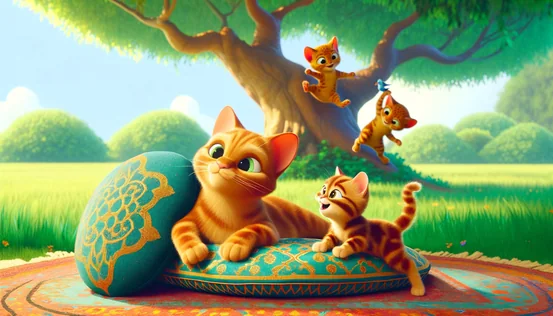

Ingénierie du prompt et regard critique
Description précise d’une image donnée
L’exercice
Développer la précision lexicale et grammaticale des étudiant·e·s à travers la rédaction de prompts détaillés en anglais pour reproduire une image via un outil d’IAG. En analysant leurs résultats et en interagissant sur un forum, les étudiant·e·s renforcent également leurs compétences critiques à l’écrit.
Ce que l’étudiant·e doit faire :
- Observer l’image.
- Utiliser un agent conversationnel pour reproduire l’image, en se concentrant sur les détails et en rédigeant des prompts aussi précis que possible.
- Publier l’image obtenue sur le forum, accompagnée d’un commentaire sur le résultat et les défis rencontrés, et interagir avec les productions des autres participants.
Exemple d’image avec commentaire

Son commentaire sur le forum
"The generated image is almost similar to the original; however, it is difficult to reproduce the same cushion patterns as those in the reference image. In my image, the blue bird is also missing, as well as the moss at the base of the tree, the bushes in the background, and the rug under the cushions. The cats are also slightly different from the original; they do not have the same position. The tree is different as well, and there are additional trees and flowers that do not appear in the original model."